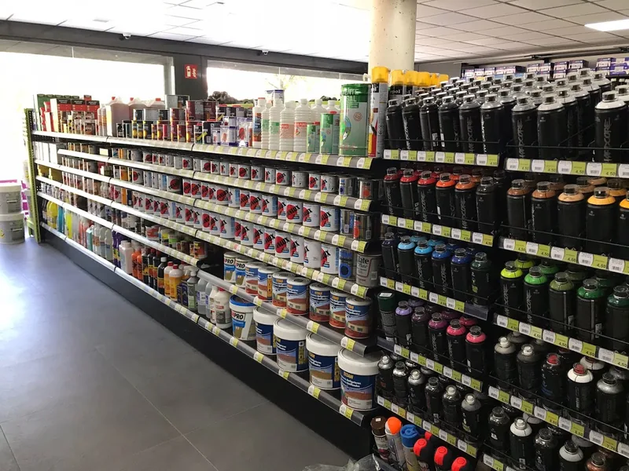
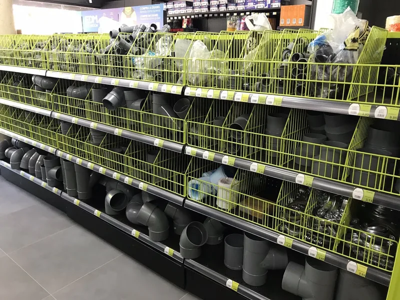
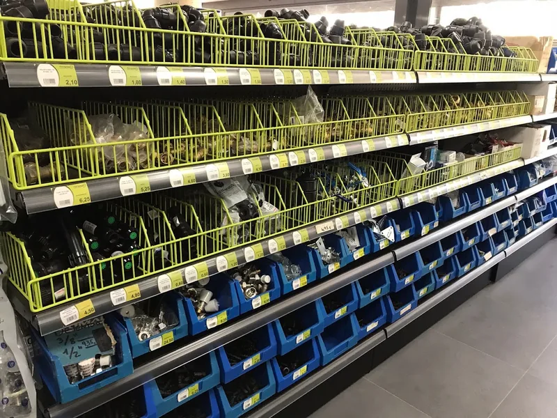
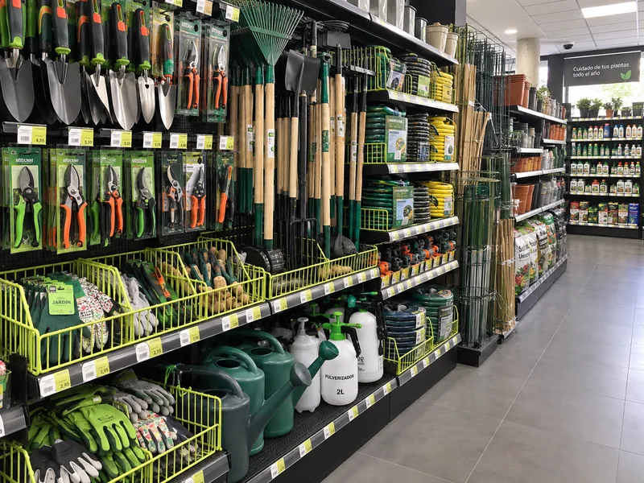

Tu ferretería en Navarcles
Ferretería local en Navarcles con una amplia variedad de productos de ferretería, herramientas, hogar, decoración, jardinería, pequeños electrodomésticos y regalos.
Productos

Pinturas
Pinturas, barnices, aerosoles y accesorios.

Fontanería
Tuberías, conexiones y accesorios de fontanería.

Accesorios de ferretería
Herramientas, tornillería y fijaciones.

Hogar y jardín
Herramientas de jardín, macetas, mangueras y regaderas.
- Herramientas manuales y eléctricas
- Tornillería y fijaciones
- Pintura y accesorios
- Fontanería
- Menaje del hogar
- Decoración y regalos
- Pequeños electrodomésticos
- Jardinería
- Artículos de reclamo
Pide información aquí
Passeig Àngel Vivó, 26-28
08270 Navarcles, BarcelonaCómo llegar
08270 Navarcles, BarcelonaCómo llegar